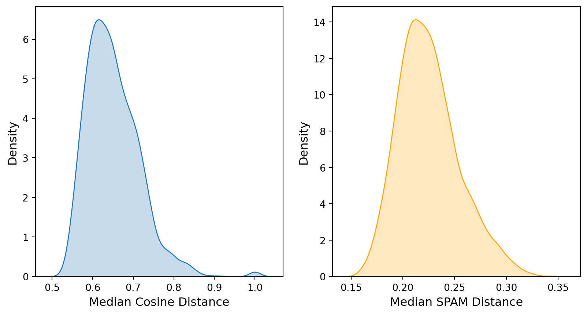
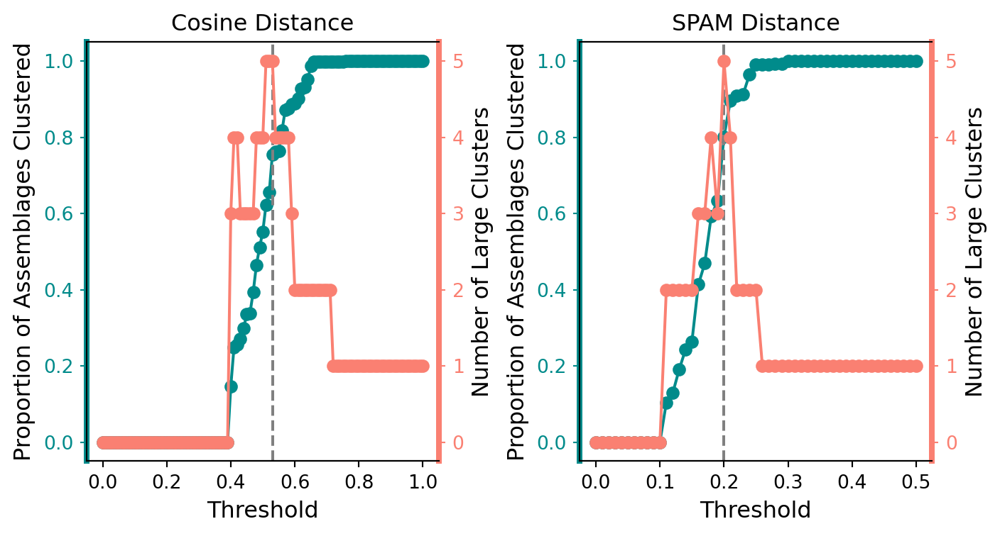

Code
import pandas as pd
df = pd.read_csv("ltrm_fish_data.csv", low_memory=False)We pulled all backwater, electrofishing records from the Long Term Resource Monitoring repository. In total, that is over 253,804 records.
import pandas as pd
df = pd.read_csv("ltrm_fish_data.csv", low_memory=False)First, we aim to reduce our dataset based on tolerance for missing data. We subset the data initially by requiring the fishcode to be available for our clustering algorithms. Next, to contextualize the conditions that are associated with different kinds of assemblages, we rely on basic hydrological characteristics, such as temp, do (dissolved oxygen), current, and depth we observe how the availability of these features has changed over time.
import seaborn as sns
import matplotlib.pyplot as plt
df = df[df['fishcode'].notna()].reset_index(drop=True)
df['year'] = pd.to_datetime(df['sdate']).dt.year
yearly_missing_df = df.groupby('year')[['temp', 'do', 'current', 'depth']].apply(lambda x: x.isna().mean())
fig, ax = plt.subplots(1, 1)
sns.lineplot(
data = yearly_missing_df,
ax = ax,
linewidth = 2,
marker = 's'
)
ax.set_xlabel("Year", fontsize = 12)
ax.set_ylabel("Proportion of Missing Data", fontsize = 12);
Both temperature and depth have been reliably recorded, however, current and dissolved oxygen were not reliably recorded until 2000 and 2004, respectively (see Figure Figure 1). For simplicity, and to mitigate the introduced bias by excluding observations with missing data, we elected to retain only observations since 2004 that had known values for all four hydrological features, reducing our number of observations to 130,951.
df = df[(df['year'] >= 2004) & (df[['temp', 'do', 'current', 'depth']].isna().sum(axis=1) == 0)].reset_index(drop=True)The LTRM dataset is organized by individual fish observations. Thus, we decided to reformat it such that each row represents a location (by northing and easting) and time (by period) pair. Corresponding to that spatio-temporal identifier, we marked all present and all absent species and the median hydrological conditions.
Since multiple samples could correspond to one spatio-temporal identifier, only recording the median of hydrological conditions does limit the information retained. It’s possible we could also retain the IQR or some measure of spread for the features.
A table showing the final, re-organized dataset is provided below. In total, there are 2,280 assemblages and 119 unique species of fish.
df = df.groupby(['utm_e', 'utm_n', 'year', 'period', 'pool']).agg(
median_temp=('temp', 'median'),
median_do=('do', 'median'),
median_current=('current', 'median'),
median_depth=('depth', 'median'),
fish_codes=('fishcode', lambda x: list(x))
)
unique_fish = set([item for sublist in df['fish_codes'] for item in sublist])
expanded_df = pd.DataFrame({fish: df['fish_codes'].apply(lambda x: fish in x) for fish in unique_fish})
df = pd.concat([df, expanded_df], axis=1)
df.drop(columns = ['fish_codes'], inplace=True)
fish_df = df.drop(columns=['median_temp', 'median_do', 'median_current','median_depth'])
df['richness'] = fish_df.sum(axis=1)
pd.set_option('display.max_columns', None)
df.head()| median_temp | median_do | median_current | median_depth | WLYE | U-CL | RDSN | SVMW | CNLP | TFSD | PDFH | FWDM | SBWB | TPMT | OSSF | GDFH | BNMW | PRPH | GSBG | SFSN | BKBF | QLBK | FHMW | BLCF | CARP | RRDR | GSOS | NTPK | YLBH | MNEY | CCGF | SPSK | BKSS | TTPH | BHCP | BNBH | YWBS | BUSK | U-CY | U-LY | GSPS | LMBS | RVCS | CMMW | FHCF | SHRH | PSWM | SMBF | WTBS | BWFN | BNDR | GZSD | CMSN | RVSN | SNGR | U-IL | WTPH | BGWM | GSPK | GDRH | CNCF | MMSN | SMMW | SVCP | U-PC | BDKF | RVRH | WTCP | RKBS | BDDR | NHSK | BKBH | GSWM | STCT | U-CN | FKMT | WDSN | STGR | YOYF | MQTF | SVRH | SVLP | SVCB | SGER | SMBS | STBS | WRMH | BGOS | PNSD | LESF | GNSF | CLSR | BLGL | PSBG | BMBF | MGNP | YWPH | SNSN | U-CT | GDSN | GSRS | JYDR | PGMW | SHDR | STSN | LNGR | GDEY | HFCS | MDDR | PDSN | SBSN | BTTM | SJHR | CNSN | ERSN | LGPH | WTSK | BKCP | BSDR | BHMW | GSCP | RESF | SCBC | richness | |||||
|---|---|---|---|---|---|---|---|---|---|---|---|---|---|---|---|---|---|---|---|---|---|---|---|---|---|---|---|---|---|---|---|---|---|---|---|---|---|---|---|---|---|---|---|---|---|---|---|---|---|---|---|---|---|---|---|---|---|---|---|---|---|---|---|---|---|---|---|---|---|---|---|---|---|---|---|---|---|---|---|---|---|---|---|---|---|---|---|---|---|---|---|---|---|---|---|---|---|---|---|---|---|---|---|---|---|---|---|---|---|---|---|---|---|---|---|---|---|---|---|---|---|---|---|---|---|---|---|---|
| utm_e | utm_n | year | period | pool | ||||||||||||||||||||||||||||||||||||||||||||||||||||||||||||||||||||||||||||||||||||||||||||||||||||||||||||||||||||||||||||
| 532479 | 4938958 | 2014 | 1 | 04 | 24.9 | 6.9 | 0.41 | 1.90 | True | False | False | False | False | False | False | True | False | False | False | False | False | False | False | False | False | False | False | False | True | False | False | True | False | False | False | False | False | False | False | False | False | False | False | False | False | False | False | False | True | True | False | False | True | False | False | False | False | False | False | False | False | False | False | False | False | True | False | False | False | False | False | False | True | False | False | False | False | False | False | False | False | False | False | False | True | False | False | False | True | False | False | False | False | False | False | False | False | False | False | False | False | False | False | False | False | False | False | False | True | True | False | False | False | False | False | False | False | False | True | False | False | False | False | True | False | False | False | 15 |
| 536879 | 4935808 | 2004 | 1 | 04 | 20.6 | 6.9 | 0.08 | 1.60 | True | False | False | False | False | False | False | True | False | False | False | False | False | False | False | False | False | False | False | False | True | False | False | False | False | False | False | False | False | False | False | False | False | False | False | False | False | False | False | False | True | True | False | True | True | True | False | False | False | False | False | False | False | False | False | False | False | False | False | False | False | False | False | False | False | False | False | False | False | False | False | False | False | False | False | False | False | False | False | False | False | False | False | False | False | False | False | False | True | False | False | False | False | False | False | False | False | False | False | False | False | False | False | False | False | False | False | False | False | False | False | False | True | False | False | False | False | False | False | 10 |
| 536929 | 4935758 | 2016 | 1 | 04 | 24.8 | 6.0 | 0.02 | 1.60 | False | False | False | False | False | False | False | True | False | False | False | False | False | False | False | False | False | False | False | False | True | False | False | False | False | False | False | False | True | False | False | False | False | False | False | False | False | True | False | False | False | False | False | False | False | True | False | True | False | False | False | False | False | False | False | False | False | False | False | False | False | False | False | False | False | False | False | False | False | False | False | False | False | False | False | False | False | False | False | False | False | False | False | False | False | False | False | False | True | False | False | False | False | False | False | False | False | False | False | False | True | False | False | False | False | False | False | False | False | False | False | False | False | False | False | False | False | False | False | 8 |
| 536979 | 4935758 | 2023 | 1 | 04 | 28.1 | 12.8 | 0.06 | 0.45 | True | False | False | False | False | False | False | True | False | False | False | False | False | False | False | False | False | False | False | False | False | False | False | True | False | False | False | False | False | False | False | False | False | False | False | False | False | True | False | False | False | False | False | False | True | False | False | True | False | False | False | False | False | False | False | False | False | False | False | False | False | False | False | False | False | False | False | False | False | False | False | False | False | False | False | False | False | False | False | True | False | False | False | False | False | False | False | False | True | False | False | False | True | False | True | False | False | False | False | False | True | False | False | False | False | False | False | False | False | False | True | True | False | True | False | True | False | False | False | 15 |
| 537129 | 4936458 | 2004 | 3 | 04 | 8.5 | 11.3 | 0.00 | 0.40 | False | False | False | False | False | False | False | False | False | False | False | False | False | False | False | False | False | False | False | False | False | False | False | False | False | False | False | False | False | False | False | False | False | False | False | False | False | False | False | False | False | False | False | False | False | False | False | False | False | False | False | False | False | False | False | False | False | False | False | False | False | False | False | False | False | False | False | False | False | False | False | False | False | False | False | False | False | False | False | False | False | False | False | False | False | False | False | False | False | False | False | False | False | False | False | False | False | False | False | False | False | False | False | False | False | False | False | False | False | False | True | False | False | False | False | False | False | False | False | 1 |
Before performing any statistical learning, the pre-processed dataset can be explored to uncover any basic patterns. We first looked at the distribution of richness (the number of species found in each assemblage) by pool.
import seaborn as sns
fig, ax = plt.subplots(1, 1)
sns.kdeplot(df.reset_index(), x='richness', clip=(0, None), hue='pool', fill=True, alpha = 0.1)
ax.set_xlabel("Richness", fontsize = 12)
ax.set_ylabel("Density", fontsize = 12);
Figure 2 suggests the richness of an assemblage, irrespective of pool, period, and year, tends to be contained between 5 and 25 species. Pool 4 tends to have the assemblages that are the least rich with a median richness around 8 species, whereas the La Grange Pool tends to be the most rich with a median richness around 17 species.
Next, we looked how the median richness in each pool has changed with respect to the sampling year.
fig, ax = plt.subplots(1, 1)
sns.lineplot(df, x='year', y='richness', hue='pool', ax = ax, estimator='median')
ax.set_xticks([2004, 2007, 2010, 2013, 2016, 2019, 2023])
ax.set_yticks(range(0, 23, 2))
ax.set_xlabel("Year", fontsize = 12)
ax.set_ylabel("Richness", fontsize = 12)
ax.legend(title='pool', loc='upper right', bbox_to_anchor=(1.18, 1.02));Figure 3 suggests there does not exist any sustained temporal trends across pools with regards to an increase or decrease in median richness of assemblages. Notably, pools 4 and 8 both had major one-year declines in richness in 2020, although this is possibly due to a under-sampling bias due to the COVID-19 pandemic. Thus, we elected to remove all assemblages from 2020 in pools 4 and 8 for data quality purposes. This left us with 2,256 assemblages in total.
We could also remove data from 2008 (for some or all pools), but that is not as clear to me as bias in the collection method, however, wasn’t there a major recession that year?
mask = ~((df.index.get_level_values('year') == 2020) & (df.index.get_level_values('pool').isin(['04', '08'])))
df = df[mask]
fish_df = fish_df[mask]Next, we looked at how richness varies across periods for each pool.
fig, ax = plt.subplots(1, 1)
sns.lineplot(df, x='period', y='richness', hue='pool', ax = ax, estimator='median')
ax.set_xticks([1, 2, 3]) # Set tick positions
ax.set_xlabel("Period", fontsize = 12)
ax.set_ylabel("Richness", fontsize = 12);
Figure 4 suggests that across across all pools, assemblages tend to be the least rich in period 1 (early summer), have a substantial increase in richness by period 2 (late summer), with a modest decrease in richness by period 3 (early fall). Interestingly, the La Grange pool’s change in richness between periods 1 and 2 is most pronounced, whereas pool 26’s change in richness across all periods is nearly negligible.
Our final piece of exploratory data analysis was to understand the distribution of unique species across all pools.
from upsetplot import plot
fish_df = df.drop(columns=['median_temp', 'median_do', 'median_current','median_depth', 'richness'])
presence_matrix = fish_df.groupby(level='pool').max()
multi_index_df = presence_matrix.T
# Group by the 5-level MultiIndex and count species
result = (
multi_index_df
.groupby(list(multi_index_df.columns)) # Group by all pools
.size() # Count species in each group
.rename('species_count') # Rename for clarity
)
plot(result, element_size=25);The most common habitat combination is that a species is found in all pools. A sizeable number of species are also found in both the La Grange pool and pool 26, or just the La Grange pool. The La Grange pool contains the most unique species, with the other four pools roughly equal richness (see Figure Figure 5)
The primary analysis here has two machine learning components. The first is an unsupervised, clustering algorithm to group similar assemblages based on community structure (not the presence/absence of one particular species). This clustering is intentionally done without consideration of pool, year, period, or hydrological conditions. The resulting clusters, thus, tend to suggest common assemblage themes. From these clusters, we can readily discuss how their frequency has changed across time and pools. The second is a supervised, classification problem to use hydrological conditions to predict the assemblage type. This classification model can then provide context about the conditions under which certain assemblage types are more likely to occur, aiding in habitat restoration projects.
We first identified candidate metrics of dissimilarity between assemblages. There are several possible choices, but four more common choices for comparing exclusively binary features are Hamming, Jaccard, Rogers-Tanimoto, and Cosine distances. We also present a variant of the Rogers-Tanimoto distance, concisely named Similarity of Presence and Absence Metric (SPAM), under which Hamming, Jaccard, and Rogers-Tanimoto are sub-cases.
For concreteness, we also present two toy-assemblages to demonstrate each distance, where we suppose there are only three species of fish: Red, Blue, and Green and we have two assemblages, \(A\): (True, False, False), and \(B\): (True, True, False). Let \(a\) denote the shared presence count, \(b\) denote the shared absence count, \(c\) denote the count of species in \(A\) but not \(B\), and \(d\) denote the count of species in \(B\) but not \(A\). In the simple example, \(a=b=1\), \(c=0\), and \(d=1\). Let \(|\cdot|\) denote the cardinality of a set, namely, the number of True elements in an assemblage, so \(|A| = 1\) and \(|B| = 2\) in the example. Let \(a_i\) refer to the value of the indicator function, such that \(a_i = 1\) if the \(i^\text{th}\) element of \(A\) is True and 0 otherwise, and similarly for \(b_i\).
Hamming distance is perhaps the simplest of the distance metrics presented here, as it simply counts the number of raw differences between two assemblages,
\[ d_{\text{Hamming}} = \sum_i 1\{a_i \neq b_i\} = c + d. \]
For the provided example, the Hamming distance would be one, out of a potential maximum value of three. Since Hamming distance does not depend on the number of shared presences or absences, it treats their values equally as null, and places a higher weight on mismatches between assemblages.
Jaccard distance measures the proportion of mismatched species relative to the the number of species found overall across assemblages,
\[ \begin{equation} d_{\text{Jaccard}} = \frac{|A \cup B| - |A \cap B|}{|A \cup B|} = \dfrac{c + d}{a + c + d}. \end{equation} \]
For the provided example, the Jaccard distance would be 1/2 out of a potential maximum value of one. Notably, Jaccard distance ignores explicitly any information value of shared absence. Although, implicitly, as the number of shared absences increases, the collective \(a\), \(c\), and \(d\) values must decrease since the sum \(a+b+c+d\) is fixed, even if the substitution of \(a + c + d \mapsto n - b\) was made, mismatch occurrences are weighted equally to shared absence information.
Rogers-Tanimoto distance weights dissimilarities as twice as impactful as shared occurrences,
\[ d_{\text{Rogers-Tanimoto}} = \dfrac{2(c + d)}{a + b + 2(c + d)}. \]
For the provided example, the Rogers-Tanimoto distance would be 1/2 out of a potential maximum value of one. While the Rogers-Tanimoto distance is more advantageous in our setting by valuing mismatches as more informative than shared absence data, it still values shared presence and shared absence equally.
Cosine distance measures the cosine of the angle between the vectors corresponding to each assemblage. It can be particularly advantageous for situations where the differences between vectors are irrelevant of magnitude, but rather depend on direction, and further it excels for high-dimensional, sparse data (such as ours, with a sparsity of 89%). Concretely, the formula is,
\[ \begin{equation} d_{\text{Cosine}} = 1 - \dfrac{A \cdot B}{||A||\,|B||} \end{equation} \]
where \(||\cdot||\) denotes the euclidean norm of each assemblage. In the binary case, it can be simplified to,
\[ \begin{equation} d_{\text{Cosine}} = 1 - \dfrac{|A \cap B|}{\sqrt{|A|\, |B|}} = 1 - \dfrac{a}{\sqrt{(a + c)(a + d)}}. \end{equation} \]
Consequently, this formulation is fixated only on shared presence, and gives no weight to shared absence.
All of the distance metrics presented thus far either ignore shared absence information (Hamming, Cosine), or treat shared absence equal to shared presence data (Hamming, Rogers-Tanimoto), or treat mismatch occurrences equal to shared absence occurrences(Jaccard). We elected to construct a metric similar to the Rogers-Tanimoto metric which both incorporates shared absence occurrences and allow for unequal weighting between shared absence, shared presence, and mismatch occurrences. These extensions are vital for comparing assemblages derived from ecological surveys where false-absences are non-negligible. To our knowledge, such a metric is not used in the literature. We refer to this metric as the Similarity by Presence and Absence Metric (SPAM), which we define as, \[ d_{\text{SPAM}} = \dfrac{\alpha (c + d)}{\beta a + b + \alpha (c + d)}, \]
where \(0 < \alpha < \beta\), are chosen weights that indicate the relative value an occurrence provides. For example, if \(1 < \alpha < \beta\), then shared presence data is the most informative, followed by mismatches, followed by shared absence data. If \(\alpha < 1 < \beta\) then shared presence data is most informative, followed by shared absence data, followed by mismatches. A similar theme can be drawn from any combinations of \(\alpha, \beta > 0\).
In our situation, we view shared presence data as the most informative, followed by mismatch occurrences, followed by shared absence. While this stance dictates that \(1 < \alpha < \beta\), we subjectively chose \(\alpha = 2\) and \(\beta = 3\). As a result, for the example provided above, the SPAM distance would be 1/3.
Interestingly, the proposed SPAM distance metric is a more general form of a normalized Hamming distance (\(\alpha = \beta = 1\)), the Jaccard distance (\(\alpha, \beta \rightarrow \infty\)), and the Rogers-Tanimoto distance metrics (\(\alpha = 2\), \(\beta = 1\)). Therefore, for our proceeding work we elected to consider both the SPAM distance metric and the cosine distance metric as our measure of dissimilarity between assemblages.
We elect to form clustering using agglomerative clustering. This process initializes by places each assemblage in their own cluster. Next, the distance between clusters is computed, and the nearest clusters are merged into the same cluster. Note, once a cluster has two or more elements (assemblages), the user must specify a linkage to define the distance between clusters.
There are four primary choices for linkages. Single and complete linkages compute the minimum and maximum, respectively, distances between elements of each cluster. As a result, both single and complete linkages are sensitive to false-absences in one or more of their assemblages. Ward’s linkage aim is to minimize the gain in within-cluster variance as result of the merge, necessitating the definition of a mean assemblage, which is ill-defined in our binary setting.
The final linkage, and the one we elect to use, is average. In this method, the average, pairwise distances between assemblages is computed, and the cluster pairing for which this is minimum is merged. The merging of clusters is halted when the user either specifies the number of clusters, and/or a tolerance for the distance between clusters to be merged.
Before we perform the agglomerative clustering, we removed assemblages that are considered substantial outliers. To define these outliers, we computed the pairwise distances between assemblages, and found the median distance to each other assemblage, per-assemblage. This was done for both the cosine and SPAM metrics defined earlier. The resulting distributions are provided below.
from scipy.spatial.distance import pdist, squareform
def spam_distance(x, y, alpha=2, beta=3):
a = sum((x == 1) & (y == 1))
b = sum((x == 0) & (y == 0))
c = sum((x == 1) & (y == 0))
d = sum((x == 0) & (y == 1))
return alpha * (c + d) / (beta*a + b + alpha * (c + d))
dist_matrix_cosine = pdist(1*fish_df, metric='cosine')
dist_matrix_spam = pdist(1*fish_df, metric=spam_distance)
dist_df_cosine = pd.DataFrame(squareform(dist_matrix_cosine))
dist_df_spam = pd.DataFrame(squareform(dist_matrix_spam))
fig, ax = plt.subplots(1, 2, figsize=(10, 5))
sns.kdeplot(dist_df_cosine.median(axis=0), clip=(0, None), ax = ax[0], fill=True)
sns.kdeplot(dist_df_spam.median(axis=0), clip=(0, None), ax = ax[1], fill=True, color="orange")
ax[0].set_xlabel("Median Cosine Distance", fontsize = 12)
ax[0].set_ylabel("Density", fontsize = 12)
ax[1].set_xlabel("Median SPAM Distance", fontsize = 12)
ax[1].set_ylabel("Density", fontsize = 12)Text(0, 0.5, 'Density')
The presence of outliers was more clear when using cosine distance, likely resulting from the occasional assemblages with only a few species. Thus, we made two copies of the dataset to proceed with, one we use cosine distance on and where we remove assemblages with median cosine distances greater than 0.8 ( leaving 2203 assemblages remaining), and one we use SPAM distance on and choose to retain all assemblages.
fish_cosine_df = fish_df[(dist_df_cosine.median(axis=0) <= 0.8).values].copy()
fish_spam_df = fish_df.copy()
cosine_df = df[(dist_df_cosine.median(axis=0) <= 0.8).values].copy()
spam_df = df.copy()
dist_matrix_cosine = pdist(1*fish_cosine_df, metric='cosine')
dist_matrix_spam = pdist(1*fish_spam_df, metric=spam_distance)
dist_df_cosine = pd.DataFrame(squareform(dist_matrix_cosine))
dist_df_spam = pd.DataFrame(squareform(dist_matrix_spam))Since our clusters will be used as targets for our classification task, we required each of the resulting clusters to have a minimum of 100 assemblages. Second, we aimed to have no less than four clusters, and no more than ten clusters, to both promote success with our classification task, but to also generate ecologically-meaningful, distinct assemblage themes for each cluster.
To accomplish these goals, we varied the our tolerance for the distance between assemblage clusters from 0 to 1 for the cosine distance and dataset, and 0 to 0.5 for the SPAM distance and dataset. The resulting figures were used to guide our threshold choice.
import numpy as np
from scipy.cluster.hierarchy import linkage, fcluster
linked_cosine = linkage(dist_matrix_cosine, method='average')
linked_spam = linkage(dist_matrix_spam, method='average')
fig, ax = plt.subplots(1, 2, figsize=(8, 4))
for n, thresholds in enumerate([np.linspace(0, 1, 101), np.linspace(0, 0.5, 51)]):
ratio_data_clustered = []
num_big_clusters = []
for t in thresholds:
if n == 0:
clusters = fcluster(linked_cosine, t, criterion='distance')
else:
clusters = fcluster(linked_spam, t, criterion='distance')
cluster_sizes = np.bincount(clusters)
large_clusters = cluster_sizes[cluster_sizes >= 100]
num_big_clusters.append(len(large_clusters))
if n == 0:
ratio_data_clustered.append(large_clusters.sum() / len(fish_cosine_df))
else:
ratio_data_clustered.append(large_clusters.sum() / len(fish_spam_df))
#if num_big_clusters[-1] > 4:
# print(ratio_data_clustered[-1])
# print(t, num_big_clusters[-1])
ax[n].plot(thresholds, ratio_data_clustered, color='darkcyan', marker='o', linestyle='-')
ax2 = ax[n].twinx()
ax2.plot(thresholds, num_big_clusters, color='salmon', marker='o', linestyle='-')
ax[n].set_xlabel("Threshold", fontsize=12)
ax[n].set_ylabel("Proportion of Assemblages Clustered", fontsize=12)
ax[n].spines['left'].set_linewidth(3)
ax[n].tick_params(axis='y', labelcolor='darkcyan')
ax[n].spines['left'].set_edgecolor('darkcyan')
ax[n].yaxis.set_tick_params(left=True, color='darkcyan')
ax2.spines['right'].set_linewidth(3)
ax2.tick_params(axis='y', labelcolor='salmon')
ax2.spines['right'].set_edgecolor('salmon')
ax2.yaxis.set_tick_params(right=True, color='salmon')
ax2.set_ylabel("Number of Large Clusters", fontsize=12)
ax[0].axvline(0.53, color='grey', linestyle='--')
ax[1].axvline(0.20, color='grey', linestyle='--')
fig.subplots_adjust(wspace=0.4)
ax[0].set_title("Cosine Distance")
ax[1].set_title("SPAM Distance")Text(0.5, 1.0, 'SPAM Distance')
For the cosine distance and dataset, we elected to use a distance threshold of 0.53, resulting in 5 major clusters which contain 75.53% (1664 of 2203) of the remaining assembalges. For the SPAM distance and dataset, we eelcted to use a distance threshold of 0.20 (1805 of 2256), resulting in 5 major clusters which contain 80.00% of the remaining assembalges. We can visualize both of these clustering processes using dendrograms,
import numpy as np
from scipy.cluster.hierarchy import dendrogram
fig, ax = plt.subplots(1, 2, figsize=(8, 4), sharex=True)
dendrogram(
linked_cosine,
color_threshold = 0.53,
count_sort=True,
no_labels=True,
ax=ax[0]
)
dendrogram(
linked_spam,
color_threshold = 0.20,
count_sort=True,
no_labels=True,
ax=ax[1]
)
ax[0].axhline(y=0.53, color='grey', linestyle='--')
ax[1].axhline(y=0.20, color='grey', linestyle='--')
ax[0].set_xlabel('Assemblages', fontsize = 12)
ax[1].set_xlabel('Assemblages', fontsize = 12)
ax[0].set_ylabel("Distance", fontsize = 12)
ax[0].set_title("Cosine Distance")
ax[1].set_title("SPAM Distance");
Each clustering method produced sets of five clusters, and, by design, each of these clusters have at least 100 assemblages, although, the number of assemblages in each cluster varies substantially.
from scipy.cluster.hierarchy import fcluster
# cosine
cosine_cluster_labels = fcluster(linked_cosine, t=0.53, criterion='distance')
cosine_df['cluster'] = cosine_cluster_labels
fish_cosine_df['cluster'] = cosine_cluster_labels
cluster_sizes = cosine_df['cluster'].value_counts()
big_clusters = cluster_sizes[cluster_sizes >= 100].index
mask = cosine_df['cluster'].isin(big_clusters).values
cosine_df = cosine_df[mask].reset_index(drop=True)
fish_cosine_df = fish_cosine_df[mask].reset_index(drop=True)
mapping = dict(zip(big_clusters, range(1, len(big_clusters) + 1)))
cosine_df['cluster'] = cosine_df['cluster'].replace(mapping)
fish_cosine_df['cluster'] = fish_cosine_df['cluster'].replace(mapping)
# spam
spam_cluster_labels = fcluster(linked_spam, t=0.20, criterion='distance')
spam_df['cluster'] = spam_cluster_labels
fish_spam_df['cluster'] = spam_cluster_labels
cluster_sizes = spam_df['cluster'].value_counts()
big_clusters = cluster_sizes[cluster_sizes >= 100].index
mask = spam_df['cluster'].isin(big_clusters).values
spam_df = spam_df[mask].reset_index(drop=True)
fish_spam_df = fish_spam_df[mask].reset_index(drop=True)
mapping = dict(zip(big_clusters, range(1, len(big_clusters) + 1)))
spam_df['cluster'] = spam_df['cluster'].replace(mapping)
fish_spam_df['cluster'] = fish_spam_df['cluster'].replace(mapping)fig, ax = plt.subplots(1, 2, figsize=(8, 4), sharey=True)
sns.countplot(x='cluster', data=fish_cosine_df, hue='cluster', palette="Set2", legend=False, ax = ax[0])
sns.countplot(x='cluster', data=fish_spam_df, hue='cluster', palette="Set2", legend=False)
ax[0].set_ylabel("Number of Assemblages", fontsize=12)
ax[0].set_xlabel("Cosine Clusters", fontsize=12)
ax[1].set_xlabel("SPAM Clusters", fontsize=12)Text(0.5, 0, 'SPAM Clusters')
We next inspected how each cluster varied in it’s species composition.
ordering = fish_df.mean().sort_values(ascending=False).index.tolist()
ordering.append('cluster')
cosine_comp = fish_cosine_df[ordering].groupby('cluster').mean() * 100
spam_comp = fish_spam_df[ordering].groupby('cluster').mean() * 100
filt = (np.maximum(cosine_comp.max(), spam_comp.max()) > 10).values
cosine_comp = cosine_comp.loc[:, filt]
spam_comp = spam_comp.loc[:, filt]
fig, ax = plt.subplots(1, 2, figsize=(10, 50), sharey=True)
sns.heatmap(cosine_comp.T, cmap='Blues', annot=True, fmt=".1f", ax = ax[0], cbar=False)
sns.heatmap(spam_comp.T, cmap='Blues', annot=True, fmt=".1f", ax = ax[1], cbar=False)
ax[0].tick_params(axis='y', rotation=0)
ax[0].set_title("Cosine Clusters")
ax[1].set_title("SPAM Cluster")
ax[0].set_xlabel("")
ax[1].set_xlabel("")
ax[0].xaxis.set_ticks_position('top')
ax[0].xaxis.set_label_position('top')
ax[1].xaxis.set_ticks_position('top')
ax[1].xaxis.set_label_position('top');
import numpy as np
import pandas as pd
import matplotlib.pyplot as plt
import seaborn as sns
from sklearn.decomposition import PCA
from sklearn.preprocessing import StandardScaler
import matplotlib.patches as mpatches
# Assuming cosine_comp.T is your DataFrame
X1 = cosine_comp.T.values # First dataset
X2 = spam_comp.T.values # Example second dataset (80% of rows)
datasets = [X1, X2] # List of datasets
titles = ["Cosine Distance", "SPAM Distance"] # Titles for the subplots
# Create subplots
fig, axs = plt.subplots(1, 2, figsize=(16, 6), sharex=True, sharey=True)
for i, (X, ax) in enumerate(zip(datasets, axs)):
# Standardize the data
X = StandardScaler().fit_transform(X)
# Perform PCA
pca = PCA(n_components=2)
X_pca = pca.fit_transform(X)
# Get loadings
loadings = pca.components_.T
# Scatter plot of transformed data points
most_common_cluster = cosine_comp.T.idxmax(axis=1) # Adjust based on your logic
palette = sns.color_palette("Set2", n_colors=len(set(most_common_cluster)))
mapped_colors = [palette[v - 1] for v in most_common_cluster]
legend_handles = [
mpatches.Patch(color=palette[i], alpha=0.5, label=str(i + 1)) for i in range(X.shape[1])
]
ax.scatter(X_pca[:, 0], X_pca[:, 1], color=mapped_colors, s=10, alpha=0.7)
# Add labels to data points
for j, txt in enumerate(cosine_comp.T.index):
ax.text(X_pca[j, 0], X_pca[j, 1], str(txt), color=mapped_colors[j], fontsize=8, ha='center', va='center')
# Plot the loadings (vectors)
for j in range(loadings.shape[0]):
ax.quiver(0, 0, loadings[j, 0], loadings[j, 1], angles='xy', scale_units='xy', scale=0.5,
color='red', alpha=0.5, linewidth=0.8)
ax.text(loadings[j, 0] * 1.2, loadings[j, 1] * 1.2, cosine_comp.T.columns[j],
color='black', fontsize=10, ha='center')
# Add reference lines
ax.axhline(0, color='black', linewidth=0.5)
ax.axvline(0, color='black', linewidth=0.5)
# Add title and labels
ax.set_title(titles[i])
ax.set_xlabel(f'PC1 ({pca.explained_variance_ratio_[0] * 100:.2f}%)')
ax.set_ylabel(f'PC2 ({pca.explained_variance_ratio_[1] * 100:.2f}%)')
ax.legend(handles=legend_handles, title='Top Cluster', loc='best', frameon=True)
# Adjust layout
plt.tight_layout()
plt.show()
I need to fix the length of these arrows